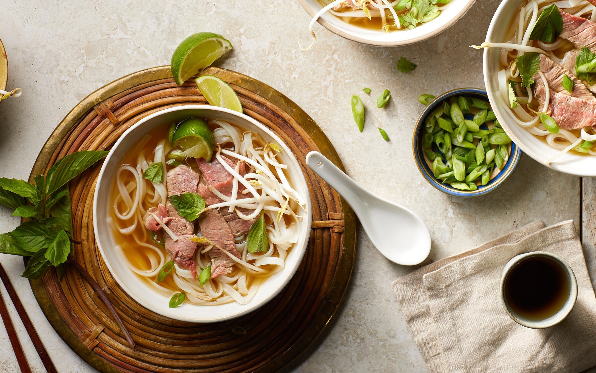

Beef Pho

Beef pho done grandma's way
This South Vietnamese style pho brings comfort with every sip and slurp. It's a restorative, richly seasoned broth ladled over rice noodles and thinly sliced beef and served with a host of crisp, tangy, spicy, sweet, and fragrant garnishes. Best of all -- someone's grandma made this recipe!
Ingredients
- 5 pounds beef soup bones
- 1 tablespoon salt
- 2 medium onions, quartered
- 1 (4 inch) piece fresh ginger root
- 2 pounds beef oxtail
- 1 white radish, sliced2 ounces whole star anise pods
- 1/2 (3inch) cinnamon stick
- 2 whole cloves garlic
- 1 teaspoon black peppercorns
- 1 tablespoon white sugar
- 1 tablespoon fish sauce
- 1 1/2 pounds dried flat rice noodles
- 1/2 found frozen beef sirloin